Migrating from 1.3.0 and 1.3.1 to 2.0
Version 2 replaces state-changing configuration calls with explicit code elements and scoped show rules. Most data structures carry over unchanged; styling moves to the component that owns it.
This guide covers both 1.3.0 and 1.3.1, whose configuration APIs are identical. Where 1.3.1 behavior differs — nested highlights, local highlight overrides, icon spacing, reference and grid fixes — the relevant section says so.
Each section shows the old code, its replacement, and an editable 2.0 example. The 1.3 snippets are for comparison only; widget controls and source edits apply to the new example, and Copy code captures both.
| If your document uses… | Start here |
|---|---|
codly-init, codly(...), or local(...) | Initialization and scoped settings |
| Enable/disable helpers | Conversion boundaries |
inset, stroke, fill, or zebra-fill | Geometry and typography and row fills |
languages, lang-*, or lang-format | Language definitions and formatters |
| Headers, footers, or filename presentation | Headers and footers and filenames |
| Ranges, skips, or continued numbering | Ranges, explicit skips, and offsets |
| Number formatting or hidden numbers | Number styling and visibility |
| Highlights or annotations | Whole-line highlights, character spans, and annotations |
| References or internal queries | References and custom rules and queries |
Update imports and initialize automatic conversion
In 1.3, codly-init installed the raw-block show rules and figure handling. The codly function then changed configuration; it did not take a code block as its positional body.
Before — 1.3.0 or 1.3.1:
#import "@preview/codly:1.3.1": *
#show: codly-init
#codly(number-format: numbering.with("1."))After — 2.0: import the namespace, set defaults with show rules, and register codly.new as the raw-block converter. codly.new(body, ..fields) constructs a block; the exported codly.codly is an alias of this constructor, not the old configuration function.
#import "@preview/codly:2.0.0" as codly
#show: codly.set_(number-enabled: setup-numbers)
#show: codly.number-set_(numbering: setup-numbering)
#show raw.where(block: true): codly.new
```py
def greet(name):
return f"Hello, {name}!"
print(greet("reader"))
```Edit & run on your device
The controls supply the example variables. Their definitions are hidden here; Copy code includes the current values and your edits.
The selector only converts block raw content; inline raw keeps Typst’s ordinary rendering. If you build every listing with an explicit #codly.new(...), omit the converter rule entirely.
Codly 2.0 requires Typst 0.15 or newer. These examples import @preview/codly:2.0.0; when working from a checkout, import "codly.typ" or a locally installed "@local/codly:2.0.0" instead.
See codly.new for accepted bodies and fields.
Replace configuration state with scoped defaults and explicit blocks
In 1.3, #codly(...) mutated state for the raw blocks that followed. local(...) applied temporary overrides, with nested: true to merge an enclosing local configuration. Block-specific settings — ranges, offsets, skips, highlights, annotations, headers, footers — were reset after each block.
Before:
#import "@preview/codly:1.3.1": *
#show: codly-init
#codly(radius: 2pt)
#local(radius: 8pt, nested: true)[
```py
special = True
```
]
```py
ordinary = True
```After: place #show: codly.set_(...) in the scope whose blocks should inherit it. Component setters work the same way. An explicit argument on codly.new overrides that block’s scoped default. Nested scopes inherit outer rules without a nested flag.
#import "@preview/codly:2.0.0" as codly
#show: codly.theme("github-light")
#show: codly.set_(radius: scope-outer-radius)
#{
show: codly.set_(radius: scope-inner-radius)
codly.new(
```py
special = True
```,
padding: scope-padding,
number-enabled: scope-first-numbers,
)
}
#codly.new(
```py
ordinary = True
```,
)Edit & run on your device
The controls supply the example variables. Their definitions are hidden here; Copy code includes the current values and your edits.
Scoped defaults apply to every matching element that follows in the scope; they are not consumed by the next block. Pass one-off data (ranges, skips, highlights, annotations) directly to codly.new, and keep shared defaults in show rules. Reusing a labelled highlight across blocks creates duplicate labels.
There is no codly-reset equivalent: end the scope to restore the enclosing configuration. To reset presentation inside a scope, apply a theme or explicit component defaults — but note that a theme does not clear block data such as ranges or annotations.
#set codly.new(...) is not an Elembic set rule. Use #show: codly.set_(...) for block defaults and the component setters (codly.line-set_, codly.lang-set_, …) for component fields.
Keep existing block behavior options
Several familiar fields stay on the block. Move them from #codly(...) or local(...) to the corresponding codly.new(..., field: value) call; use codly.set_ only when the value should apply throughout a scope.
| Field retained from 1.3 | What it controls |
|---|---|
aliases | Maps an authored language key to a syntax-highlighting language. Language badge definitions still belong to codly.lang. |
smart-indent | Keeps continuation lines aligned with source indentation. |
skip-last-empty | Omits the final empty source line when enabled. |
breakable | Allows the code block to split across pages. Header/footer repetition requires a breakable block. |
If a 1.3 field accepted a zero-argument function as a lazy value, call it yourself and pass the result; 2.0 fields expect concrete values.
The example also uses two new 2.0 controls, width and wrap-marker; the marker only appears when smart indentation is enabled.
#import "@preview/codly:2.0.0" as codly
#show: codly.theme("github-light", block: (text: (size: 9pt)))
#show: codly.lang-set_(languages: (example-python: "Python"))
#codly.new(
```example-python
def notify(address, updates):
if updates:
send_email(address, subject="Your project updates", body=format_updates(updates))
```,
aliases: if retained-alias { (example-python: "py") } else { (:) },
smart-indent: retained-smart-indent,
skip-last-empty: retained-skip-empty,
width: retained-width,
wrap-marker: if retained-wrap-marker { [↪] } else { none },
)Edit & run on your device
The controls supply the example variables. Their definitions are hidden here; Copy code includes the current values and your edits.
When checking a migrated wrapped listing, compare indentation as well as row counts: a wrapped continuation is still part of its source line. The headers and footers example uses a finite page height if you need to check pagination.
Port enable and disable helpers to conversion boundaries
The 1.3 helpers codly-enable, codly-disable, no-codly, and yes-codly controlled the state checked by codly-init. The 2.0 constructor has no enabled field: calling it means that you want a Codly block.
Before:
#import "@preview/codly:1.3.1": *
#show: codly-init
#codly-disable()
```text
Ordinary raw text
```
#codly-enable()
```py
print("formatted")
```After: choose where conversion happens. For occasional listings, leave raw blocks alone and call codly.new explicitly. For automatic conversion, write one routing rule that returns the original raw element for excluded blocks — here, everything tagged text:
#import "@preview/codly:2.0.0" as codly
#show raw.where(block: true): it => {
if conversion-enabled and not (
conversion-exclude-text and it.lang == "text"
) {
codly.new(it)
} else {
it
}
}
```py
print("formatted")
```
```text
An ordinary text block
```Edit & run on your device
The controls supply the example variables. Their definitions are hidden here; Copy code includes the current values and your edits.
Adjust the predicate to your own exclusion policy, or place the converter inside a local scope so raw blocks outside it stay ordinary.
Typography, row spacing, and the code border
Move presentation to its component; keep geometry on the block. Version 1 combined row inset, border, and outer radius in a single configuration call. Version 2 separates them:
| Version 1 | Version 2 |
|---|---|
inset: ... | #show: codly.line-set_(inset: ...) |
stroke: ... | #show: codly.line-set_(stroke: ...) |
radius: ... | codly.new(..., radius: ...), or scoped codly.set_ |
| Native raw/text typography | Native rules, or the text dictionary of a theme section |
Neither 1.3 release had a Codly-specific font option. Native text rules still apply; for Codly-only typography, use a theme’s block.text dictionary, or number.text, lang.text, header.text, and footer.text for individual components. Place narrower rules after the theme so they take precedence.
Version 1:
#show raw: set text(font: "DejaVu Sans Mono", size: 9pt)
#codly(inset: 4pt, stroke: 1pt + luma(180), radius: 6pt)The new padding field adds space at the block edges, independent of row inset — do not port inset to padding. Version 2 also adds leading, gutter, column-gutter, and row-gutter on the block; leading sets vertical row spacing, replacing the vertical components of the old inset. These are new controls, not renames.
#import "@preview/codly:2.0.0" as codly
#show: codly.theme(
"thesis",
block: (text: (font: migration-code-font, size: migration-code-size)),
lang: (text: (font: "Source Sans 3", size: 9pt)),
)
#show: codly.line-set_(inset: migration-row-inset, stroke: 1pt + luma(180))
#codly.new(
```py
def greet(name):
return f"Welcome back, {name}!"
print(greet("Ada"))
```,
radius: migration-block-radius,
padding: migration-edge-padding,
)Edit & run on your device
The controls supply the example variables. Their definitions are hidden here; Copy code includes the current values and your edits.
If a 1.3.0 document depended on document-wide grid or grid.cell rules leaking into Codly (1.3.1 already isolated its grid), re-check the layout; version 2 exposes the supported presentation changes as component fields instead.
See codly.line, codly.new, and themes.
Background fills, zebra striping, and fill callbacks
Replace the two old background settings with one row fill. zebra-fill is removed. codly.line accepts a single paint, none, a nonempty palette, or a callback.
Version 1:
#codly(fill: white, zebra-fill: luma(240))Version 2’s matching alternating configuration is:
#show: codly.line-set_(fill: (luma(240), white))The order matters: entry 0 paints displayed row 0, entry 1 paints row 1. An old zebra-fill: none becomes a scalar fill: <old fill>; an empty palette is invalid. fill: auto restores the default alternating pattern.
Displayed rows are not source lines. Palette indexing counts generated skip rows, callout rows, and header/footer rows. Headers and footers have their own backgrounds but still advance the index, so a header shifts the stripe of the first code line. For striping by source-line parity, use the callback’s source-line field instead.
The callback receives one row dictionary:
| Field | Meaning |
|---|---|
index | Zero-based position among displayed rows, including generated rows. |
kind | "code", "skip", or "callout" for callback rows. |
source-line | One-based source line for code/callout rows; none for skips. |
number | Displayed line number after offsets/skips; none for unnumbered/generated rows. |
Headers and footers never call this function. Whole-line highlights and enabled diff backgrounds take precedence over the row fill.
Note the changed callback contract: 1.3 accepted zero-argument lazy values such as fill: () => color, but the 2.0 fill callback is a row formatter. Write fill: row => ..., or evaluate the old helper yourself (fill: helper()). Other component callbacks keep their own contracts — do not rewrite them all to take a row.
#import "@preview/codly:2.0.0" as codly
#show: codly.line-set_(fill:
if migration-stripe-mode == "displayed" {
(migration-stripe-paint, white)
} else if migration-stripe-mode == "source" {
row => {
if row.kind != "code" { return luma(250) }
if calc.rem(row.source-line, 2) == 1 { migration-stripe-paint }
else { white }
}
} else { migration-stripe-paint }
)
#show: codly.header-set_(fill: luma(220), inset: 4pt)
#codly.new(
```py
def total(prices):
subtotal = sum(prices)
tax = subtotal * 0.2
return subtotal + tax
print(total([10, 20]))
```,
header: if migration-fill-header { [Pricing example] } else { none },
ranges: if migration-fill-excerpt { ((1, 2), (4, 5)) } else { none },
smart-skip: true,
number-enabled: migration-fill-numbers,
)Edit & run on your device
The controls supply the example variables. Their definitions are hidden here; Copy code includes the current values and your edits.
The number gutter follows each row’s background by default. Set codly.number-set_(fill: ...) when you want an independent gutter paint.
See codly.line.
Language definitions, icons, and badge settings
Move language presentation from the block configuration to codly.lang. Existing dictionaries carry over, including definitions from codly-languages:
// Version 1
#codly(
languages: (py: (name: [Python], color: blue, icon: "🐍")),
display-name: true,
display-icon: true,
lang-radius: 4pt,
)
// Version 2
#show: codly.lang-set_(
languages: (py: (name: [Python], color: blue, icon: "🐍")),
display-name: true,
display-icon: true,
radius: 4pt,
)The lang- prefix is gone: inset, outset, radius, fill, and stroke are set directly on codly.lang. languages, default-color, display-name, and display-icon stay on this setter; aliases stays on the block, since it selects the syntax-highlighting language rather than badge presentation.
Every definition must now have a name. For an old icon-only definition, add name: []. A plain string (py: "Python") is still shorthand for a definition with that name, but unlike the 1.3 shortcut it respects display-name: false.
Badge fill and stroke callbacks still receive (name: ..., icon: ..., color: ...), with the language color as base paint. One split to watch: in 1.3, default-color also colored uncolored span highlights. In 2.0, codly.lang-set_(default-color: ...) covers badges only; use codly.highlight-set_(color: ...) for highlights.
1.3.1 added automatic spacing between icon and name — remove any manual h(0.2em) left in older icon definitions.
#import "@preview/codly:2.0.0" as codly
#show: codly.lang-set_(
languages: (py: (name: [Python], color: migration-badge-color, icon: "🐍")),
display-name: migration-badge-name,
display-icon: migration-badge-icon,
radius: migration-badge-radius,
fill: lang => lang.color.lighten(85%),
stroke: lang => 0.5pt + lang.color,
)
#codly.new(
```py
def greet(name):
return f"Hello, {name}!"
print(greet("Ada"))
```,
)Edit & run on your device
The controls supply the example variables. Their definitions are hidden here; Copy code includes the current values and your edits.
Per-language definitions can now also override display-name, display-icon, fill, stroke, inset, and radius for their matching badge. outset, align, and default-color belong to the shared badge settings instead.
See codly.lang and codly.language.
Custom language formatters and the new show-rule callback
Replace lang-format with a show rule. The old formatter received three positional values: the resolved display name, icon, and color — despite the old documentation’s wording, the first was not always the raw language key, and the color was positional too.
Version 1:
#codly(lang-format: (name, icon, color) => {
box(inset: 3pt, fill: color.lighten(85%), [#icon #name])
})The 2.0 replacement is a show rule on codly.lang: its callback receives the generated language element, whose body is the raw key such as "py". Read its effective settings with codly.e.fields(it) — always Codly’s own codly.e export, so element identities match.
The example adapts an old three-argument formatter. Because the show rule replaces the built-in badge renderer, it must resolve the definition, display flags, and color fallback itself; the component’s fill, stroke, inset, and radius no longer apply automatically.
#import "@preview/codly:2.0.0" as codly
#show: codly.lang-set_(
languages: (py: (name: [Python], icon: "🐍", color: rgb("3476a8"))),
display-name: migration-custom-name,
display-icon: migration-custom-icon,
)
#let old-formatter(name, icon, color) = {
if name == [] and icon == [] { return [] }
box(inset: migration-custom-inset, fill: color.lighten(85%),
[#icon #strong(name)])
}
#show: codly.lang-show_(it => {
if not migration-custom-badge { return it }
let fields = codly.e.fields(it)
let def = if fields.languages == none { (:) } else {
fields.languages.at(fields.body, default: (:))
}
let name = if def.at("display-name", default: fields.display-name) {
def.at("name", default: fields.body)
} else { [] }
let icon = if def.at("display-icon", default: fields.display-icon) {
def.at("icon", default: [])
} else { [] }
old-formatter(
name,
if icon == none { [] } else { icon },
def.at("color", default: fields.default-color),
)
})
#codly.new(
```py
message = "Hello, Ada!"
print(message)
```,
)Edit & run on your device
The controls supply the example variables. Their definitions are hidden here; Copy code includes the current values and your edits.
For old lang-format: none, use lang-position: none on codly.new or codly.set_ to disable badge placement; for lang-format: auto, remove the custom show rule. A formatter that wants the raw language key can use fields.body directly.
Filename badges and source-file input
Use the explicit file field. Although the 1.3 signatures listed filename and filename-separator, they were never implemented. Treat filename display as new in 2.0.
#codly.new(source, file: "example.py")Filename badges are their own codly.file component, styled with codly.file-set_ independently of codly.lang. file-position: top + left puts the badge in a header, bottom + left in a footer, left beside the first code row, and none hides it. Explicit positions reserve space so the badge never overlaps code.
codly.new(path("example.py")) reads a file from disk, infers the language from its extension, and uses the basename as filename (file: none hides it, lang overrides inference). A string argument is source text, not a path to read. For an authored raw block, pass file explicitly, as below.
#import "@preview/codly:2.0.0" as codly
#show: codly.file-set_(
fill: migration-file-fill,
radius: migration-file-radius,
stroke: 0.5pt + luma(160),
)
#codly.new(
```py
def greet(name):
return f"Hello, {name}!"
print(greet("Ada"))
```,
file: "greeting.py",
file-position: migration-file-placement,
lang-position: if migration-file-language { auto } else { none },
)Edit & run on your device
The controls supply the example variables. Their definitions are hidden here; Copy code includes the current values and your edits.
There is no filename-separator field. For bespoke composition, put styled content in a header/footer body or replace codly.file through codly.file-show_.
See codly.file and codly.new.
Select source ranges and collapse the gaps
Keep the source coordinates; move the selection onto the code element. range selects one inclusive source-line interval, ranges several; source lines start at 1. offset changes the displayed numbers without changing which lines are selected.
// 1.3.0 / 1.3.1: settings for the next raw block.
#codly(ranges: ((2, 3), (6, 7)), smart-skip: true)Pass those values to codly.new(...), or use #show: codly.set_(...) to share them within a scope. The removed #codly-range(2, end: 4) helper becomes range: (2, 4). Tuples still cast to codly.range, so the explicit constructor is optional:
// Equivalent selections in 2.0:
ranges: ((2, 3), (6, 7))
ranges: (codly.range(2, 3), codly.range(6, 7))
// Open-ended selection:
range: codly.range(3) // source line 3 through the endUse either range or ranges, not both. 1.3 let ranges win when both were present; 2.0 rejects the combination, including a value inherited from an outer scope. A single tuple (2, 3) belongs in range; ranges takes an array such as ((2, 3),).
smart-skip is still a boolean or a dictionary. true marks every omitted region; (rest: true, first: false, last: false) marks only the gaps between selections, with first and last inheriting rest (default false) when omitted. Automatic skip rows mark omitted source lines but add no numbering shift beyond the missing lines themselves.
#import "@preview/codly:2.0.0" as codly
#codly.new(
```py
def process(records):
load(records)
validate(records)
normalize(records)
sort(records)
save(records)
report(records)
process(records)
```,
ranges: migration-ranges,
smart-skip: (
first: migration-gap-first,
rest: migration-gap-middle,
last: migration-gap-last,
),
)Edit & run on your device
The controls supply the example variables. Their definitions are hidden here; Copy code includes the current values and your edits.
See range and smart-skip.
Port explicit skips without moving their insertion point
Keep each existing (position, length) pair unchanged. The old #codly-skip(position, length) helper appended a skip to the next block’s state. In 2.0, supply that record in skips, optionally using codly.skip(position, length).
// 1.3.0 / 1.3.1:
#codly-skip(2, 8)
// Or: #codly(skips: ((2, 8),))// 2.0, inside codly.new(...):
skips: (codly.skip(2, 8),)
// Equivalent: skips: ((2, 8),)The insertion point is the source line before which the gap row appears: position 2 puts the skip before source line 2, in both 1.3 and 2.0. Older descriptions of these positions as zero-indexed did not match the renderer — keep your working positions unchanged.
An explicit skip represents lines already absent from the source. Its length shifts subsequent displayed numbers but removes nothing: three source lines with skips: ((2, 8),) display as 1, a skip marker, 10, 11. To hide lines that are still in the source, use range/ranges with smart-skip instead.
skip-line and skip-number still set the code and number cells of the gap row, and existing content values port directly. In 2.0, an array supplies different content for successive explicit skips; automatic gaps use the fallback marker. Keep the number column enabled to see skip-number.
#import "@preview/codly:2.0.0" as codly
#codly.new(
```py
prepare()
process()
finish()
```,
skips: (codly.skip(migration-skip-position, migration-skip-length),),
skip-line: if migration-skip-custom {
align(center)[… #migration-skip-length omitted lines …]
} else { [⋯] },
skip-number: [⋯],
)Edit & run on your device
The controls supply the example variables. Their definitions are hidden here; Copy code includes the current values and your edits.
See skip.
Replace offset-from with the unified offset field
offset now takes a number, auto, or a label. The numeric form keeps its old meaning: add that number to the displayed line numbers. #codly-offset(offset: 20) becomes a field on codly.new(...) or a scoped #show: codly.set_(offset: 20).
// 1.3.0 / 1.3.1:
#codly(offset: 20)
// Continue another block:
#codly(offset-from: <first-part>)
// Continue it with an additional shift:
#codly(offset-from: <first-part>, offset: 3)// 2.0, inside codly.new(...):
offset: 20
offset: <first-part>
// Or start the first selected source line at 1:
offset: autoFor continuation, label the previous block (or its enclosing figure): offset: <first-part> continues from that block’s last displayed number, accounting for its own offsets, selections, explicit skips, and unnumbered lines. Because the offset is relative to the predecessor, an excerpt beginning at source line 2 starts two above the predecessor’s last number; to continue seamlessly, subtract first-source-line - 1 from codly.info(<first-part>).last-number in context. An empty predecessor contributes zero. Never make two blocks continue each other.
If the old document combines offset-from with an additional numeric shift, resolve that number explicitly in context:
#context {
let info = codly.info(<first-part>)
let last = if info.last-number == none { 0 } else { info.last-number }
codly.new(
```
next line
```,
offset: last + 3,
)
}offset: auto starts an excerpt at 1. It anchors to the first selected source line that exists and keeps the gaps between disjoint intervals — it does not compress separate excerpts into a consecutive sequence.
Offsets affect displayed numbers, line-reference labels, and highlight line coordinates. Source-indexed constructs — ranges, annotation intervals, callouts, gutter arrays — keep their source coordinates. A scoped offset now applies to every matching block in the scope; it is no longer a next-block value that resets after rendering.
#import "@preview/codly:2.0.0" as codly
#codly.new(
```py
prepare()
load()
```,
)<first-part>
#codly.new(
```py
validate()
process()
finish()
```,
range: if migration-offset-excerpt { (2, 3) } else { none },
offset: migration-offset-mode,
)Edit & run on your device
The controls supply the example variables. Their definitions are hidden here; Copy code includes the current values and your edits.
See codly.new and codly.info.
Separate number styling from number visibility
Move number formatting onto codly.number; use number-enabled to hide the column. In 1.3, number-format: none disabled line numbers. In 2.0, codly.number’s numbering accepts a native numbering pattern or callback, while the block’s number-enabled field controls whether Codly generates its automatic number gutter.
// 1.3.0 / 1.3.1:
#codly(
number-format: numbering.with("I."),
number-align: right + horizon,
number-placement: "outside",
)
// To hide numbers: #codly(number-format: none)// 2.0:
#show: codly.number-set_(
numbering: "I.",
align: right + horizon,
placement: "outside",
)
// For one block: codly.new(..., number-enabled: false)Callbacks still receive the numeric value, so (n) => [L#n] ports directly as numbering: (n) => [L#n]. Do not confuse this with number-show_, whose callback receives the generated element — read its integer with codly.e.fields(it).number. Use a set rule for formatting and a show rule to replace the rendered number element.
placement still accepts "inside" and "outside"; outside placement moves custom gutter columns along with the automatic number column. number-enabled: false removes only the automatic column — independent custom gutters remain.
Leaving individual lines unnumbered is new in 2.0, not a renamed 1.3 argument. unnumbered: (2,) skips numbering for source line 2 while keeping subsequent numbers contiguous; codly.unnumbered-line(2, [→]) supplies custom content for that cell. Unnumbered lines use the special reference labels covered in references.
#import "@preview/codly:2.0.0" as codly
#show: codly.number-set_(
numbering: migration-number-format,
align: right + horizon,
placement: if migration-number-outside { "outside" } else { "inside" },
)
#codly.new(
```py
prepare()
# Explain the next step.
process()
finish()
```,
number-enabled: migration-number-enabled,
unnumbered: if migration-number-unnumbered { (2,) } else { () },
)Edit & run on your device
The controls supply the example variables. Their definitions are hidden here; Copy code includes the current values and your edits.
See number and unnumbered-line.
Rename whole-line highlights and preserve their colors
Rename highlighted-lines to highlighted. Existing integer entries and (line, paint) pairs still work through casts to codly.highlighted-line. These are different from the character spans in highlights, whose field name is unchanged.
// 1.3.0 / 1.3.1:
#codly(
highlighted-lines: (2, (4, green.lighten(80%))),
highlighted-default-color: yellow.lighten(80%),
)// 2.0:
#show: codly.highlight-set_(color: yellow, fill: color => color.lighten(80%))
// Inside codly.new(...):
highlighted: (2, (4, green.lighten(80%)))
// Equivalent explicit entries:
highlighted: (
codly.highlighted-line(2),
codly.highlighted-line(4, green.lighten(80%)),
)highlighted-default-color becomes the color and fill settings of codly.highlight: color chooses the base paint and the fill callback derives the row background from it. To keep an already-computed paint exactly, pass it in each highlighted-line entry, or use fill: color => color with that paint as color.
The line coordinate is the displayed number, in both 1.3 and 2.0. If an offset shows source line 2 as number 12, target 12. Explicit skips and unnumbered lines shift the mapping, and a source line with no displayed number cannot be targeted by highlighted at all — use row styling or a custom gutter there.
A palette array cycles through entries that lack an explicit paint; explicit paints do not advance the cycle. Whole-line and span highlights have separate cycles per block but share the configured palette. 1.3 kept highlighted-default-color (rows) and default-color (spans) independent — to preserve different colors, pin row paints explicitly in highlighted and set span defaults with highlight-set_.
#import "@preview/codly:2.0.0" as codly
#show: codly.highlight-set_(
color: migration-whole-palette,
fill: color => color.lighten(80%),
)
#codly.new(
```py
prepare()
validate()
process()
finish()
```,
offset: migration-whole-offset,
highlighted: (
2 + migration-whole-offset,
if migration-whole-explicit {
(4 + migration-whole-offset, green.lighten(80%))
} else { 4 + migration-whole-offset },
),
)Edit & run on your device
The controls supply the example variables. Their definitions are hidden here; Copy code includes the current values and your edits.
See highlighted-line and highlight.
Port character highlights, including 1.3.1 local overrides
Keep highlights and its dictionaries; move shared styling onto codly.highlight. Character coordinates start at one, and end is inclusive in both versions. Existing bounds that correctly select their intended text can stay; older descriptions of zero-based, exclusive bounds did not match the renderer. Omitted or none start means the beginning of the line; omitted or none end means its end. start: 0 also selects the line’s beginning. The line coordinate uses displayed numbering, including offsets and explicit skips, in both versions.
// 1.3.0 / 1.3.1:
#codly(
highlight-radius: 3pt,
highlight-inset: 1pt,
highlight-fill: color => color.lighten(80%),
highlights: ((line: 2, start: 12, end: 14, fill: orange),),
)// 2.0:
#show: codly.highlight-set_(
radius: 3pt,
inset: 1pt,
fill: color => color.lighten(80%),
)
// Inside codly.new(...):
highlights: (codly.highlight-config(2, start: 12, end: 14, fill: orange),)highlight-stroke, highlight-outset, and highlight-clip move the same way: drop the prefix and pass them to highlight-set_. Note the two roles of fill: a span entry’s fill picks its base paint, while the component’s fill callback transforms that paint into the box background.
1.3.1’s local overrides carry over. Per-highlight inset, baseline, outset, clip, and radius — and the nested-highlight fixes — still override component defaults in 2.0, which additionally allows per-span stroke and a depth field to control stacking order. On 1.3.0 these local overrides did not work; port the shared settings first, then add exceptions.
One default changed: baseline used to derive from the bottom highlight inset; it now defaults to 0pt (auto follows the content baseline). Set it explicitly if you relied on the old positioning. Explicit bounds must stay nonnegative. Equal positive bounds select one character; choose end at least start for a visible span.
#import "@preview/codly:2.0.0" as codly
#show: codly.highlight-set_(radius: 0pt, inset: 1pt)
#codly.new(
```py
def clamp(value):
return max(0, min(value, 100))
```,
offset: migration-span-offset,
highlights: (
..if migration-span-nested {
((line: 2 + migration-span-offset, start: 5, fill: blue),)
} else { () },
(
line: 2 + migration-span-offset,
start: 12,
end: 14,
fill: orange,
radius: if migration-span-local { migration-span-radius } else { none },
),
),
)Edit & run on your device
The controls supply the example variables. Their definitions are hidden here; Copy code includes the current values and your edits.
See highlight-config and highlight.
Port annotation ranges and their numbering
Keep the source-line ranges and attach numbering to the annotation configuration. annotations remains an array of dictionaries with start, optional end, optional content, and optional label. Dictionaries cast to codly.annotation-config, so you can port them before adopting the explicit constructor.
// 1.3.0 / 1.3.1:
#codly(
annotation-format: numbering.with("(a)"),
annotations: ((start: 2, end: 4, content: [body]),),
)// 2.0, inside codly.new(...):
annotations: ((
start: 2, end: 4, content: [body],
numbering: numbering.with("(a)"),
),)
// Or: codly.annotation-config(2, end: 4, content: [body],
// numbering: numbering.with("(a)"))The global annotation-format field is gone; set numbering on each annotation, repeating the same callback for a shared format. numbering: none hides the number but keeps the content and brace. end: none still means a one-line annotation, not “through the end”.
Both endpoints are one-indexed source lines, and end is inclusive; offsets change displayed numbers without moving the brace. Ranges must be positive, ordered, and non-overlapping. When selecting excerpts, include the annotation’s starting line — an annotation that starts outside the excerpt is dropped, not re-anchored at the excerpt boundary.
content is ordinary Typst content; rotated labels still work. 2.0 sizes braces from the measured rows, including wrapped code, so re-check the output after changing width or pagination. A labelled annotation still needs a labelled enclosing figure, as shown in references.
To replace the brace entirely, use annotation-show_: read body, height, num, numbering, and the hidden label content with codly.e.fields(it), and keep that resolved label content in your replacement so references keep their anchor.
#import "@preview/codly:2.0.0" as codly
#codly.new(
```py
def process():
load()
compute()
save()
process()
```,
annotations: ((
start: migration-annotation-start,
end: migration-annotation-end,
content: if migration-annotation-rotate {
rotate(-90deg, reflow: true)[body]
} else { [body] },
numbering: if migration-annotation-number {
numbering.with("(a)")
} else { none },
),),
)Edit & run on your device
The controls supply the example variables. Their definitions are hidden here; Copy code includes the current values and your edits.
See annotation-config and annotation.
Keep native references and move their formatting rules
Your existing @block:2, @highlight-label, and @annotation-label references can stay. Keep a label on the enclosing figure; codly.new discovers it automatically, so you do not need to repeat it as block-label. Item labels still belong on their highlight or annotation configuration.
// 1.3.0 / 1.3.1:
#codly(
reference-by: "item",
reference-sep: " — ",
reference-number-format: numbering.with("I"),
)// 2.0:
#show: codly.ref-set_(
by: "item",
sep: " — ",
numbering: numbering.with("I"),
)Line labels are built from the displayed integer, before the visual numbering pattern: a block with Roman numbering still uses @block:2, not @block:II. If an offset shows source line 2 as number 12, the label becomes @block:12 — keep references and highlight coordinates consistent with that mapping.
by: "line" refers to highlights and annotations by displayed line; by: "item" uses a highlight’s tag, which must exist. Annotation item references changed: they now use the annotation’s content instead of its formatted number. If you relied on a suffix like (a), switch to displayed-line references or override the generated codly.annotation-ref:
#show: codly.annotation-ref-show_(it => {
let fields = codly.e.fields(it)
[#ref(fields.block) — (a)]
})Hiding the annotation number does not hide its item content.
For unnumbered source lines, use labels such as @block:l2p1: l2 is the preceding displayed number and p1 counts consecutive unnumbered lines after it. Numbered lines keep the normal @block:2 form.
Each reference kind is now its own generated element — codly.line-ref, codly.highlight-ref, and codly.annotation-ref — with its own *-set_ and *-show_ wrappers; ref-set_ supplies the shared defaults. In a show callback, read the containing block label and the number/item fields with codly.e.fields(it), and return ref(fields.block) to keep the figure reference’s normal formatting.
#import "@preview/codly:2.0.0" as codly
#show: codly.ref-set_(
by: migration-ref-mode,
sep: migration-ref-separator,
numbering: migration-ref-numbering,
)
#figure(caption: [A migrated code block])[
#codly.new(
```py
def process():
result = compute()
return result
```,
highlights: ((
line: 2,
start: 5,
end: 10,
tag: [value],
label: <migration-value>,
),),
annotations: ((
start: 2,
end: 3,
content: [body],
label: <migration-body>,
),),
)
]<migration-code>
Line: @migration-code:2. \
Highlight: @migration-value. \
Annotation: @migration-body.Edit & run on your device
The controls supply the example variables. Their definitions are hidden here; Copy code includes the current values and your edits.
See reference settings, line-ref, highlight-ref, and annotation-ref.
Port lazy settings, custom show rules, and queries
Many 1.3 settings accepted a zero-argument function as a lazy value, e.g. #codly(radius: () => chosen-radius). In 2.0, each field declares its accepted types: a radius takes a length, so pass chosen-radius directly. Genuine callbacks keep their documented contracts — a number formatter receives a number, a highlight paint transformer a resolved paint, a row-fill callback a row dictionary. Do not mechanically rewrite every old function-valued setting.
To decorate or replace a generated element, install a *-show_ callback. It receives an Elembic element; read its resolved fields with codly.e.fields(it), always using Codly’s own codly.e export so element identities match. The rule below decorates one number while keeping the normal renderer:
#import "@preview/codly:2.0.0" as codly
#show: codly.number-show_(it => {
let fields = codly.e.fields(it)
if fields.number == custom-number {
text(
fill: custom-accent,
weight: if custom-bold { "bold" } else { "regular" },
it,
)
} else { it }
})
#codly.new(
```py
data = load()
result = compute(data)
save(result)
```,
)
#context {
let blocks = codly.e.query(codly.new, before: here())
[Blocks before this paragraph: #blocks.len().]
}Edit & run on your device
The controls supply the example variables. Their definitions are hidden here; Copy code includes the current values and your edits.
Returning it (possibly wrapped) keeps the built-in renderer, including its formatting and anchors; returning fresh content replaces it. Constructing the same component inside its own show rule re-triggers the rule.
Scripts that inspected state("codly-..."), internal figures, or nested .body.children relied on 1.3 implementation details and must be rewritten. Use codly.e.query for element instances, codly.e.fields for fields, codly.e.get for scoped defaults, and codly.info for a labelled block’s source-line count and last displayed number. Query inside context, and never make an element’s existence depend on a query that counts that same element.
Native selectors such as codly.selector() work in show rules, but their default representation layers can match intermediate renderings, so they are not interchangeable with codly.e.query for counting instances. Constrain introspection to the elements and locations you need.
Continue with queries and show rules for filtering and replacement examples, or internals for the rendering stages.